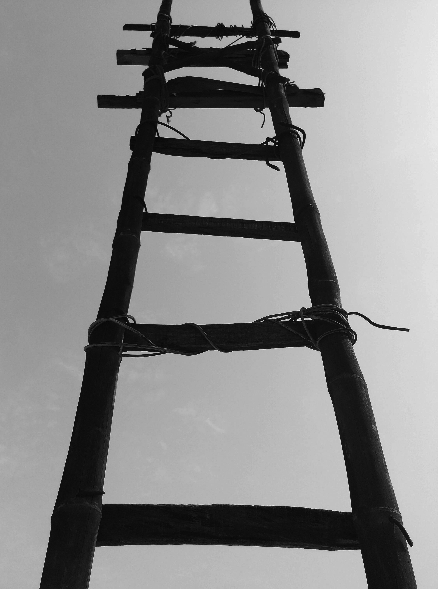

Credit
Back to Story
Image 1
Akyurt,Engin. Dramatic Cliff Diving in Black and White. September 27,2024. Pexels
LinkImage 2
Riccardo. Person Mountain Climbing. December 14, 2015. Pexels
Link
Image 3

Sharma, Khimish. Black Bamboo Ladder during Daytime. February 12, 2016. Ludhiana, PB, India. Pexels
Link
Image 4

Braghini, Bruno. Person Standing on a Rock Stocked Between Rocks. Pexels
Link Image 5

Buergi, Christian. Passage at an Ice Cave. March 19, 2021. Zermatt, VS, Schweiz. Pexels
LinkImage 6

Bilgin, Cigdem. Rustic Cabin in Winter Snowy Landscape. October 27, 2024. Pexels
Link Image 7
Ungaro, Francesco. Majestic Polar Bear Resting on Artic Terrain. August 21, 2023. Pexels
LinkImage 8

Simsek. Mustafa, Spooky Abandoned Hallway with Dim Lighting. Pexels
LinkImage 9
Pixabay. Gray Padlock. May 3, 2015. Pexels
LinkImgage 10
Pixabay. Seven White Closed Doors. Pexels
Link Image 11

Kennst du Die Umkreisel App. Snow Covered Tress Under Cloudy Sky. February 18, 2018. Pexels
LinkImgage 12

Martin, Man Climbing on Rock Mountain. May 1, 2017. Leavenworth, United States. Pexels
LinkImage 13
GoldBerg, Ted. Hallway of Abandoned Building. June 19, 2021. Pexels
LinkImage 14
Sorenson, Josh. Abandoned Building. July 28, 2011. Pexels
Link
Back to Story